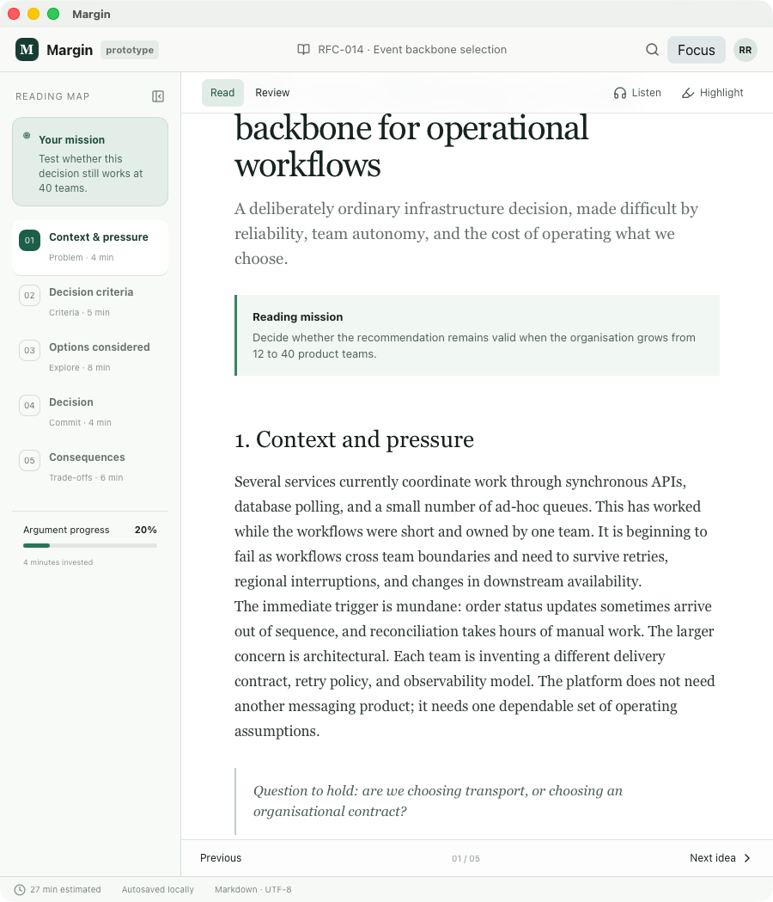

Active reading
Documents you can't afford to skim deserve more than a scrollbar.
Margin turns long technical documents — RFCs, ADRs, specifications, policies, business cases — into an argument you navigate, not pages you endure. Read with a map, a mission, and a comprehension check waiting at the end.

The reading loop
- Orient.A visual reading map shows the argument's shape before you read a word.
- Read or listen.Synchronized text-to-speech keeps pace with your eyes.
- Answer a question.Each section opens with the question it actually answers.
- Capture a thought.Margin notes hold your interpretation, not the document's words.
- See it evolve.A reasoning lens tracks claims, evidence, and risks as they emerge.
- Prove it.A comprehension review — the boss battle — closes the loop.
Built for finishing, and for remembering
Reading map
Sections as steps with time estimates and checkmarks. You always know where you are in the argument and what it cost to get there.
Question-first sections
Every section starts with the question it answers, so you read with intent instead of drifting.
Synchronized listening
Browser-native text-to-speech reads the document aloud at a humane pace. Zero backend, zero accounts.
Margin notes
Notes anchored to your own thinking — "write what you think, not what the document says."
Reasoning lens
Claims, evidence, and risks surfaced beside the text, so the logic of the document stays visible.
Comprehension review
Answer in your own words. Finishing the document is not the same as understanding it.
Deliberately small
- No generative-AI black box — document intelligence is explicit and inspectable.
- No accounts, no cloud sync, nothing leaves your machine.
- No points, badges, or streaks. The reward is understanding the document.
The local reader and document engine are open. Team workspaces, enterprise connectors, and governed AI are the commercial direction — later, and never at the expense of the reader.
Download
Free desktop app for macOS, Windows, and Linux. Unsigned preview builds — your OS will ask for confirmation on first launch.
Source, issues, and development on GitHub.